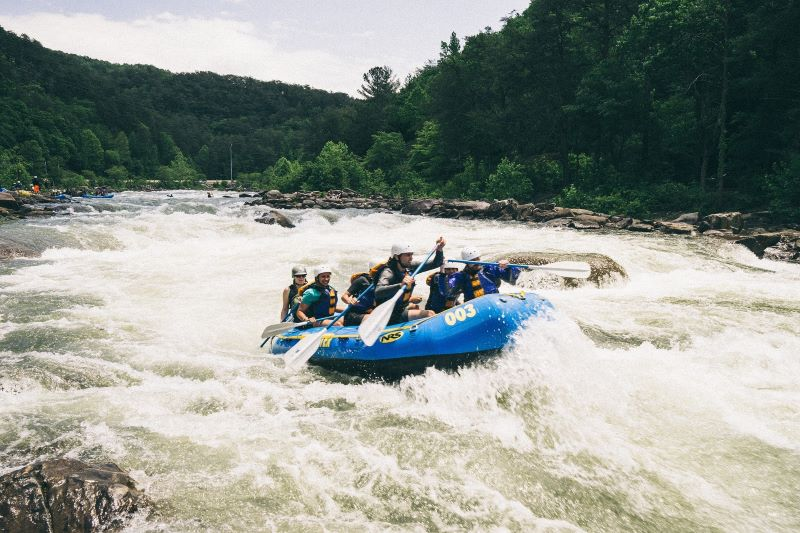

Ready for an Adventure?
Explore our most popular white water rafting trips.
Contact here →Our Trips

This pristine, flowing river features white rapids and churning water, set against a backdrop of dense evergreen forest. The scene captures moderate to challenging current conditions that are ideal for white water rafting. The river cuts through rocky terrain, creating dynamic water features perfect for an exciting outdoor adventure. The lush green vegetation surrounding the river emphasizes the natural, remote setting of this rafting destination.

Experience the thrill of navigating turbulent rapids in a vibrant blue raft, surrounded by lush green forests and rugged terrain. This dynamic scene captures the excitement of white water rafting, where teamwork and adrenaline meet nature’s raw power — perfect for adventurers seeking a memorable outdoor escape.

Glide through roaring rapids nestled in a towering pine forest, where sun-dappled waters rush over ancient rocks. Perfect for thrill-seekers craving nature’s raw energy and serene woodland beauty in one unforgettable ride.
Book your trip!
| Trip Name | Difficulty | Duration | Price (Per Person) | Book Now |
|---|---|---|---|---|
| Forest Rapids Escape | Easy | 3 hours | $45 | Contact Us |
| Rapids & Pines Expedition | Moderate | 5 hours | $75 | Contact Us |
| White Water Rafting Adventure | Challenging | Full Day (8 hrs) | $120 | Contact Us |